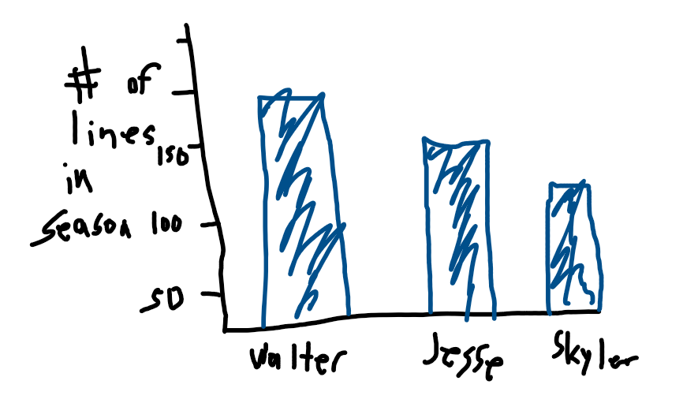
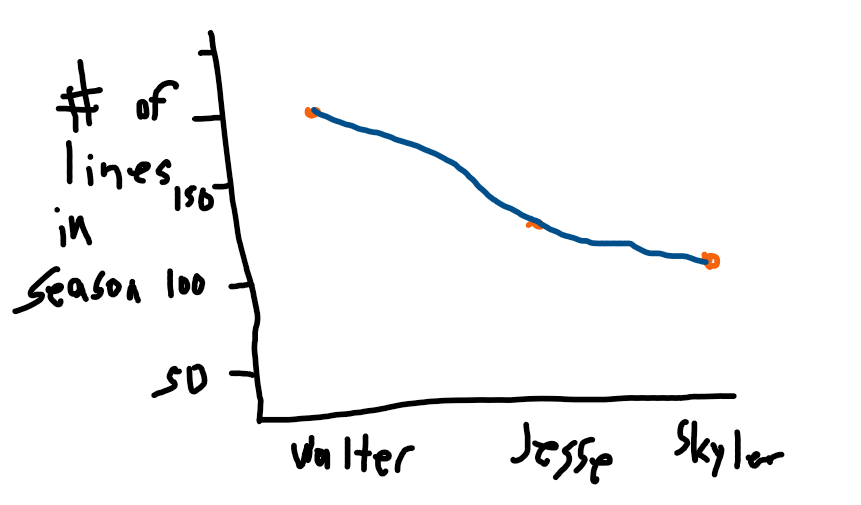
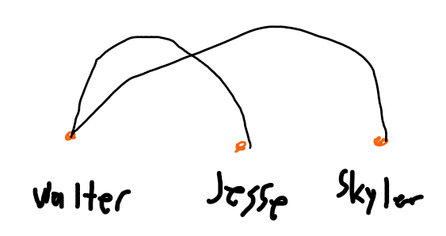
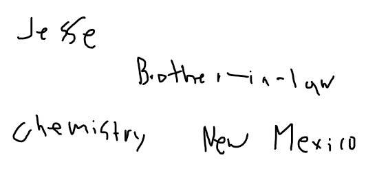
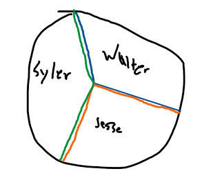
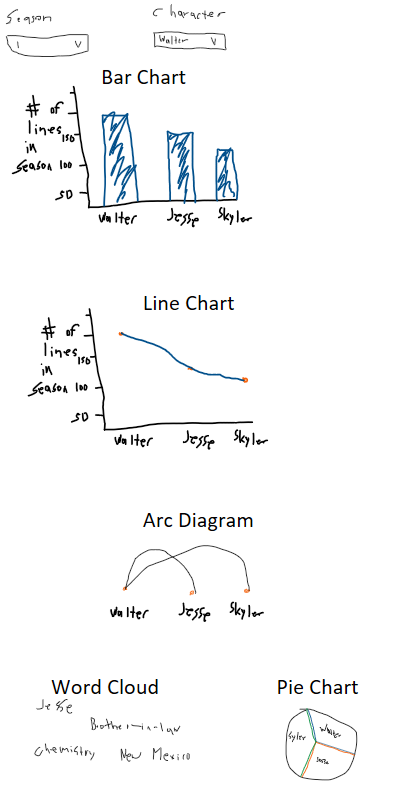

Motivation
This project focuses on text analysis of the Breaking Bad TV show transcripts. Users can explore character dialogues, word frequencies, and sentiment trends to gain insights into the show's narrative and character development.
Breaking Bad is a critically acclaimed American television drama that aired on AMC from 2008 to 2013. The show spans 5 seasons and 62 episodes, and is widely recognized as one of the greatest TV series of all time.
Set in Albuquerque, New Mexico, the series chronicles the transformation of Walter White, a struggling high school chemistry teacher diagnosed with terminal cancer, into the ruthless drug kingpin known as "Heisenberg." Alongside him is his former student and partner, Jesse Pinkman, who navigates the chaos of the methamphetamine trade. Other key characters include Skyler White (Walter's wife), Hank Schrader (Walter's brother-in-law and DEA agent), Saul Goodman (a criminal lawyer), and Gustavo "Gus" Fring (a drug distributor posing as a legitimate businessman).
Breaking Bad blends elements of crime, thriller, and drama, exploring themes of morality, identity, and consequence. The show's rich storytelling and complex character development make it an excellent subject for analysis. This project uses episode transcripts to explore character importance and word usage throughout the series. Visualizations and data-driven insights help highlight each character's role and evolution across the seasons.
Data Source
We pulled transcripts from the open web using an AI-generated Python scraper tailored to the website: https://transcripts.foreverdreaming.org/viewforum.php?f=165
Python Scraper Code
import requests
from bs4 import BeautifulSoup
import os
import time
# Base URLs
base_url = "https://transcripts.foreverdreaming.org"
forum_url = f"{base_url}/viewforum.php?f=165"
headers = {
"User-Agent": "Mozilla/5.0"
}
# Create output folder
os.makedirs("breaking_bad_transcripts", exist_ok=True)
# Step 1: Get all thread links from the forum
response = requests.get(forum_url, headers=headers)
soup = BeautifulSoup(response.text, "html.parser")
threads = soup.select("a.topictitle")
print(f"Found {len(threads)} threads.")
for thread in threads:
try:
title_raw = thread.text.strip()
title = title_raw.replace(" ", "_").replace(":", "").replace("?", "").replace("/", "-")
href = thread['href'].split("&")[0] # remove session ID if present
thread_url = base_url + href
print(f"Fetching: {title_raw}")
thread_response = requests.get(thread_url, headers=headers)
thread_soup = BeautifulSoup(thread_response.text, "html.parser")
# Step 2: Extract the first post's transcript
post_div = thread_soup.find("div", class_="postbody")
if post_div:
# Remove quote blocks and signatures
for tag in post_div.select(".quote, .signature"):
tag.decompose()
# Extract clean text
transcript = post_div.get_text(separator="\n", strip=True)
# Save to file
filename = f"breaking_bad_transcripts/{title}.txt"
with open(filename, "w", encoding="utf-8") as f:
f.write(transcript)
print(f"✅ Saved: {filename}")
else:
print(f"❌ Transcript not found for {title_raw}")
time.sleep(1) # Be nice to the server
except Exception as e:
print(f"Error processing {title_raw}: {e}")
continue
Visualization Components
-
Line Chart: Displays trends in data over time.

-
Bar Chart: Represents categorical data with rectangular bars.

-
Pie Chart: Visualizes proportions of categories as slices of a circle.

- Arc Cloud: Highlights relationships or connections using arcs.
-
Word Cloud: Depicts word frequency with varying font sizes.

Users can interact with filters to dynamically update the visualizations.

Design Sketches and Justifications
Initial design sketches outline the layout and interactions of the application:
     The design prioritizes clarity and usability, ensuring users can easily filter and explore earthquake data.
Development Process
- Technology Stack: D3.js for data visualization, HTML, CSS, JavaScript for front-end development. Python and Artificial Intelligence utilized for the scraping of the transcripts.
- Code Repository: GitHub Repository
- Live Demo: View Application
- Demo Recording: Not available